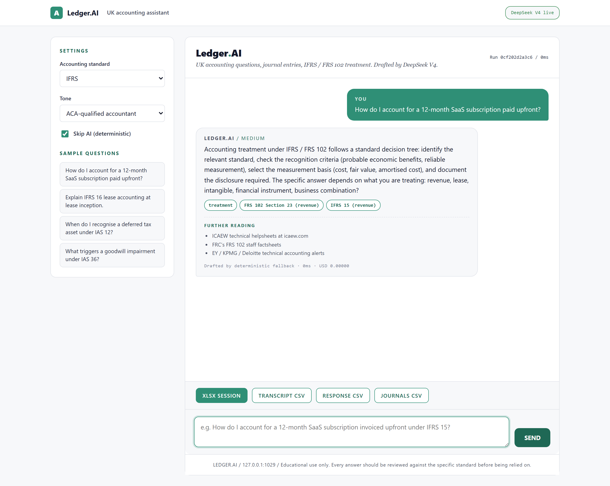
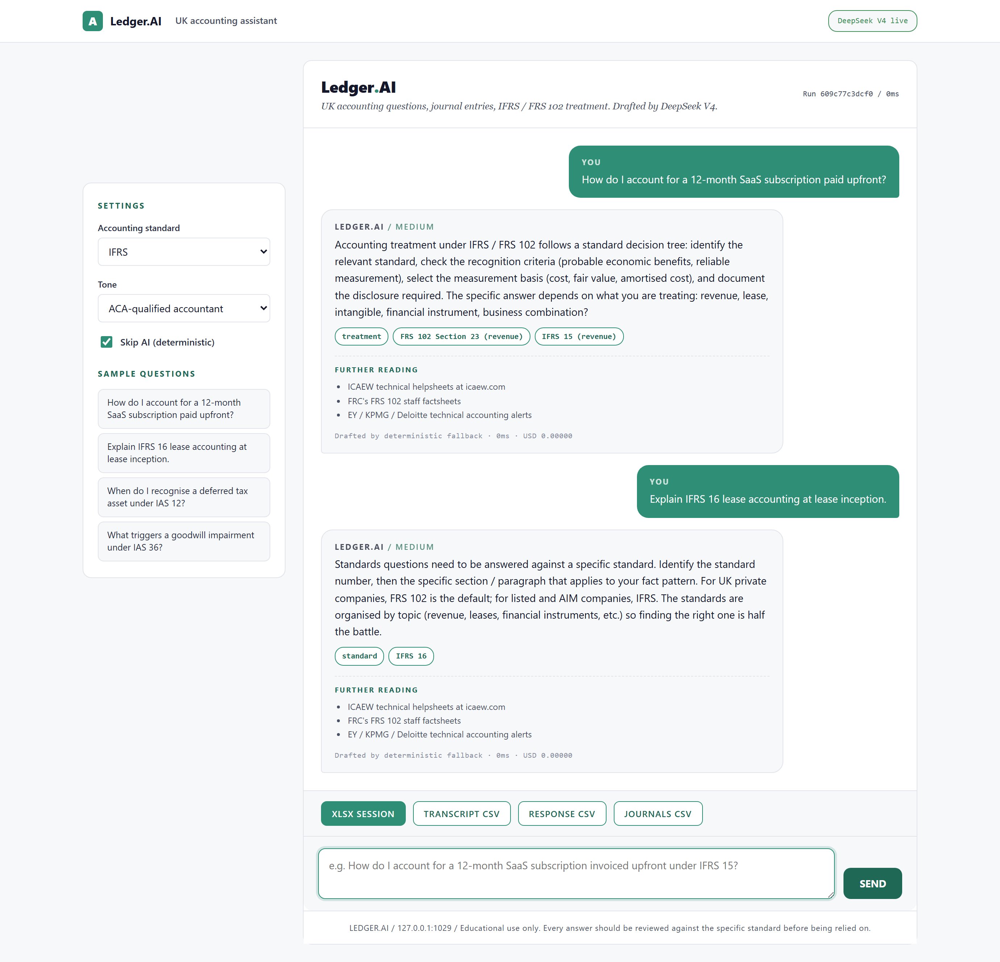
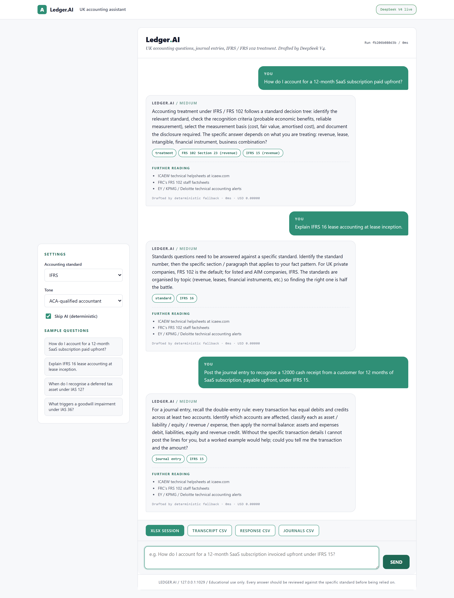

DAY 29 OF 30
Ledger.AI
ACA-qualified accounting chatbot
About the project
UK accounting Q&A: IFRS / FRS 102 / IAS treatment, journal entries with Dr / Cr lines, audit and tax. Cites standards by name and number.
A local Flask chat app that answers UK accounting questions in the voice of an ACA-qualified chartered accountant. Cites IFRS / FRS 102 / IAS standards by name and number, gives journal entries with Dr / Cr lines and amounts, and flags where professional judgement is needed.
At a glance
- Use case
- Technical accounting Q&A in the voice of an ACA-qualified UK accountant
- Inputs
- Free-text question + accounting standard + conversation history
- Outputs
- Structured answer + journal entries + standards cited + judgement flags + exports
- Model
- Single DeepSeek call per turn (~$0.0004)
How it works
- Schema. chat_schema.py validates question length (1 to 2000 chars), standard from the 5 option enum, tone from the 4 option enum, and conversation history (up to 30 turns, each role in...
- Question classifier. chat_engine.analyse pre-classifies every question by keyword voting into 9 topic buckets: journal_entry, treatment, standard, exam, reconciliation, ratio, audit, tax, other.
- AI response. chat_ai.respond layers the base system prompt with a standard-specific overlay (IFRS / FRS 102 / FRS 105 / US GAAP), sends the question plus the last 10 turns of history, and asks...
- Chat / messaging UI. Distinct from every prior day's palette.
- Excel + CSV exports. openpyxl writes the session Excel (Q&A sheet with the latest question and answer, Journal entries sheet, History sheet with the running conversation).
AI integration
DeepSeek answers in voice of ACA accountant
Limitations
- No retrieval-augmented generation in MVP. Day 29 sends the conversation history but no IFRS / FRS 102 source PDFs.
- AI proposes, ACA disposes. Every answer should be reviewed against the specific standard before being relied on.
- UK PAYE / GAAP focus. International standards are supported (US GAAP, IFRS) but UK conventions dominate the templates.
- Free-text only. File upload (TBs, statements) is post-30; for now the chat is text-only.
- Educational use only. Not professional advice.
Fun facts
- Ask it a technical accounting question and it answers like a qualified accountant, citing the standard by name and number and showing the journal entries.
- Debits on the left, credits on the right, sources quoted.
Walk-through
- Home page (cold start) - Chat / messaging aesthetic. White canvas, mint-green accent, conversation bubbles.
- First question: revenue recognition - Sample question: 'How do I account for a 12-month SaaS subscription paid upfront?' AI responds with the IFRS 15...
- Second question: lease accounting - Sample question: 'Explain IFRS 16 lease accounting at lease inception.' AI returns the ROU asset and lease liability...
- Journal-entry question - Custom question: 'Post the journal entry for a 12000 SaaS receipt over 12 months under IFRS 15.' AI returns the exact...
- Full thread view (the integration) - Top of the conversation, scrolled back to the first question.
Screenshots




PORTFOLIO. / DAY 29
SAFWAN / 30 DAYS OF FINANCE + AI